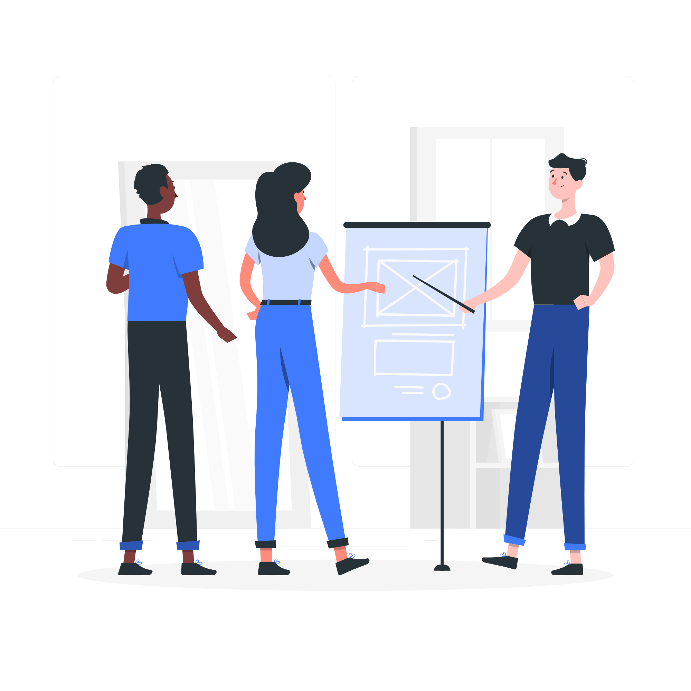

My Skills

Photoshop
Very familiar with adobe Photoshop and general familiarity with other photo editing software. Able to edit quickly, without sacrificing photo quality.

User Research
Creates effective interview questions that bring clarity to the scope of a project. Able to empathize with users and connect their needs and wants to a practical scope.

Video Editing
Deep passion for video editing. Most proficient in Premiere Pro, but also skilled in iMovie and Windows video editor. Able to quickly finish a video to enhance a project.